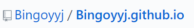

<!DOCTYPE html>


<html lang="en" >


<head>
  <meta charset="utf-8" />
    
  <meta name="viewport" content="width=device-width, initial-scale=1, maximum-scale=1" />
  <title>
    Blog |  Bingo
  </title>
  <meta name="generator" content="hexo-theme-yilia-plus">
  
  <link rel="shortcut icon" href="/favicon.ico" />
  
  
<link rel="stylesheet" href="/dist/main.css">

  
<link rel="stylesheet" href="/css/custom.css">

  
  <script src="https://cdn.jsdelivr.net/npm/pace-js@1.0.2/pace.min.js"></script>
  
  

  

<link rel="alternate" href="/atom.xml" title="Bingo" type="application/atom+xml">
</head>

</html>

<body>
  <div id="app">
    <main class="content on">
      <section class="outer">
  <article id="post-Blog" class="article article-type-post" itemscope
  itemprop="blogPost" data-scroll-reveal>

  <div class="article-inner">
    
    <header class="article-header">
       
<h1 class="article-title sea-center" style="border-left:0" itemprop="name">
  Blog
</h1>
 

    </header>
    

    
    <div class="article-meta">
      <a href="/Blog/" class="article-date">
  <time datetime="2020-04-07T09:56:44.000Z" itemprop="datePublished">2020-04-07</time>
</a>
      
  <div class="article-category">
    <a class="article-category-link" href="/categories/Blog/">Blog</a>
  </div>

      
      
<div class="word_count">
    <span class="post-time">
        <span class="post-meta-item-icon">
            <i class="ri-quill-pen-line"></i>
            <span class="post-meta-item-text"> Word count:</span>
            <span class="post-count">681</span>
        </span>
    </span>

    <span class="post-time">
        &nbsp; | &nbsp;
        <span class="post-meta-item-icon">
            <i class="ri-book-open-line"></i>
            <span class="post-meta-item-text"> Reading time≈</span>
            <span class="post-count">2 min</span>
        </span>
    </span>
</div>

      
    </div>
    

    
    
    <div class="tocbot"></div>


    

    
    <div class="article-entry" itemprop="articleBody">
      
      

      
      <h1 id="Hexo-Github免费搭建个人博客"><a href="#Hexo-Github免费搭建个人博客" class="headerlink" title="Hexo+Github免费搭建个人博客"></a>Hexo+Github免费搭建个人博客</h1><p>效果浏览:<a href="https://bingoyyj.github.io/" target="_blank" rel="noopener">我的博客</a></p>
<h2 id="安装Git和Node-js"><a href="#安装Git和Node-js" class="headerlink" title="安装Git和Node.js"></a>安装Git和Node.js</h2><p>直接去<a href="https://git-scm.com/" target="_blank" rel="noopener">Git</a>和<a href="https://nodejs.org/en/" target="_blank" rel="noopener">Node.js</a>官网下载，下载较简单，这里不赘述。</p>
<h2 id="安装Hexo"><a href="#安装Hexo" class="headerlink" title="安装Hexo"></a>安装Hexo</h2><p>命令行输入即可</p>
<figure class="highlight plain"><table><tr><td class="gutter"><pre><span class="line">1</span><br></pre></td><td class="code"><pre><span class="line">npm install -g hexo-cli</span><br></pre></td></tr></table></figure>

<h2 id="Hexo初始化"><a href="#Hexo初始化" class="headerlink" title="Hexo初始化"></a>Hexo初始化</h2><p>新建一个文件夹，可名为Blog，方便后期管理，(不想要可删掉从来)，进入文件夹目录下执行如下命令：</p>
<figure class="highlight plain"><table><tr><td class="gutter"><pre><span class="line">1</span><br><span class="line">2</span><br></pre></td><td class="code"><pre><span class="line">hexo init</span><br><span class="line">npm install</span><br></pre></td></tr></table></figure>

<p>运行成功后我们可以发现文件夹下新增了很多文件<br>其中含有_config.yml文件 ，这个文件就是网站主题的的配置文件，后面和github page关联和切换主题时，需要使用到。</p>
<h2 id="生成静态文件和开启服务"><a href="#生成静态文件和开启服务" class="headerlink" title="生成静态文件和开启服务"></a>生成静态文件和开启服务</h2><figure class="highlight plain"><table><tr><td class="gutter"><pre><span class="line">1</span><br><span class="line">2</span><br></pre></td><td class="code"><pre><span class="line">hexo g</span><br><span class="line">hexo s</span><br></pre></td></tr></table></figure>

<p>ctrl+c 关闭本地服务器<br>打开<a href="http://localhost:4000/即可看到你的博客雏形。" target="_blank" rel="noopener">http://localhost:4000/即可看到你的博客雏形。</a><br>当然，这个只能在本地访问。</p>
<h2 id="注册Github账号、新建一个仓库"><a href="#注册Github账号、新建一个仓库" class="headerlink" title="注册Github账号、新建一个仓库"></a>注册<a href="https://github.com/" target="_blank" rel="noopener">Github</a>账号、新建一个仓库</h2><p>注意:</p>
<ul>
<li>尾缀必须是github.io</li>
<li>仓库名必须和Owner名一致</li>
</ul>
<p>比如我的：</p>
<h2 id="配置SSH"><a href="#配置SSH" class="headerlink" title="配置SSH"></a>配置SSH</h2><p>新建成功后，复制ssh，打开Blog文件夹目录下的_config.yml文件并按照以下更改：</p>
<figure class="highlight plain"><table><tr><td class="gutter"><pre><span class="line">1</span><br><span class="line">2</span><br><span class="line">3</span><br><span class="line">4</span><br></pre></td><td class="code"><pre><span class="line">deploy:</span><br><span class="line">  type: git</span><br><span class="line">  repository: 你的ssh</span><br><span class="line">  branch: master</span><br></pre></td></tr></table></figure>

<h2 id="创建文章"><a href="#创建文章" class="headerlink" title="创建文章"></a>创建文章</h2><p>命令行执行</p>
<figure class="highlight plain"><table><tr><td class="gutter"><pre><span class="line">1</span><br></pre></td><td class="code"><pre><span class="line">hexo new post &lt;title&gt;</span><br></pre></td></tr></table></figure>
<p>默认在source/_post/新建一个markdown文件，用md语法编辑即可。</p>
<p>post    新建文章    /source/_posts/<br>draft    新建草稿    /source/_drafts/<br>page    新建页面（标签页，分类页等）    /source/</p>
<h2 id="更换主题"><a href="#更换主题" class="headerlink" title="更换主题"></a>更换主题</h2><p>在<a href="https://hexo.io/themes/" target="_blank" rel="noopener">Hexo主题</a>选择你喜欢的主题，在Blog目录下执行以下命令即可下载</p>
<figure class="highlight plain"><table><tr><td class="gutter"><pre><span class="line">1</span><br></pre></td><td class="code"><pre><span class="line">git clone https:&#x2F;&#x2F;github.com&#x2F;litten&#x2F;hexo-theme-xxx.git themes&#x2F;xxx</span><br></pre></td></tr></table></figure>

<p>下载成功后即可发现themes文件夹中多了你刚下载的主题。</p>
<p>此时，需将Blog文件夹目录下的_config.yml文件中的theme 修改为theme: xxx,(需要注意的是冒号后有空格)</p>
<h2 id="部署到Github"><a href="#部署到Github" class="headerlink" title="部署到Github"></a>部署到Github</h2><p>安装hexo的部署插件</p>
<figure class="highlight plain"><table><tr><td class="gutter"><pre><span class="line">1</span><br></pre></td><td class="code"><pre><span class="line">npm install hexo-deployer-git --save</span><br></pre></td></tr></table></figure>
<p>生成静态文件并部署</p>
<figure class="highlight plain"><table><tr><td class="gutter"><pre><span class="line">1</span><br><span class="line">2</span><br></pre></td><td class="code"><pre><span class="line">hexo g</span><br><span class="line">hexo d</span><br></pre></td></tr></table></figure>
<p>当然你也可以先hexo s浏览一下再部署。</p>
<p>这样你便拥有了属于你个人的博客<br><a href="https://bingoyyj.github.io/" target="_blank" rel="noopener">https://bingoyyj.github.io/</a></p>
<h1 id="主题优化"><a href="#主题优化" class="headerlink" title="主题优化"></a>主题优化</h1><h2 id="配置categories和tags"><a href="#配置categories和tags" class="headerlink" title="配置categories和tags"></a>配置categories和tags</h2><h3 id="命令行："><a href="#命令行：" class="headerlink" title="命令行："></a>命令行：</h3><figure class="highlight plain"><table><tr><td class="gutter"><pre><span class="line">1</span><br><span class="line">2</span><br></pre></td><td class="code"><pre><span class="line">hexo new page &quot;tags&quot; </span><br><span class="line">hexo new page &quot;categories&quot;</span><br></pre></td></tr></table></figure>

<h3 id="编辑-tags-index-md"><a href="#编辑-tags-index-md" class="headerlink" title="编辑 /tags/index.md"></a>编辑 /tags/index.md</h3><figure class="highlight plain"><table><tr><td class="gutter"><pre><span class="line">1</span><br><span class="line">2</span><br></pre></td><td class="code"><pre><span class="line">type: &quot;tags&quot;</span><br><span class="line">layout: &quot;tags&quot;</span><br></pre></td></tr></table></figure>

<h3 id="编辑-categories-index-md"><a href="#编辑-categories-index-md" class="headerlink" title="编辑/categories/index.md"></a>编辑/categories/index.md</h3><figure class="highlight plain"><table><tr><td class="gutter"><pre><span class="line">1</span><br><span class="line">2</span><br></pre></td><td class="code"><pre><span class="line">type: &quot;categories&quot;</span><br><span class="line">layout: &quot;categories&quot;</span><br></pre></td></tr></table></figure>

<h3 id="给文章分类和贴标签"><a href="#给文章分类和贴标签" class="headerlink" title="给文章分类和贴标签"></a>给文章分类和贴标签</h3><figure class="highlight css"><table><tr><td class="gutter"><pre><span class="line">1</span><br><span class="line">2</span><br><span class="line">3</span><br><span class="line">4</span><br><span class="line">5</span><br><span class="line">6</span><br><span class="line">7</span><br><span class="line">8</span><br><span class="line">9</span><br><span class="line">10</span><br></pre></td><td class="code"><pre><span class="line"><span class="selector-tag">---</span></span><br><span class="line"><span class="selector-tag">title</span>: <span class="selector-tag">test</span></span><br><span class="line"><span class="selector-tag">date</span>: 2020<span class="selector-tag">-04-07</span> 17<span class="selector-pseudo">:19</span><span class="selector-pseudo">:57</span></span><br><span class="line"><span class="selector-tag">categories</span>: </span><br><span class="line"><span class="selector-tag">-</span> 博客教程</span><br><span class="line"><span class="selector-tag">tags</span>:</span><br><span class="line"><span class="selector-tag">-</span> <span class="selector-tag">Hexo</span></span><br><span class="line"><span class="selector-tag">-</span> <span class="selector-tag">Github</span></span><br><span class="line"><span class="selector-tag">-</span> 主题</span><br><span class="line"><span class="selector-tag">---</span></span><br></pre></td></tr></table></figure>

<p>一篇文章一般分类只一种，标签可多个。</p>
<h2 id="本地图片"><a href="#本地图片" class="headerlink" title="本地图片"></a>本地图片</h2><p>在source文件夹新建一个img文件夹存放图片，md文件用相对路径访问即可，如：</p>
<figure class="highlight md"><table><tr><td class="gutter"><pre><span class="line">1</span><br></pre></td><td class="code"><pre><span class="line"></span><br></pre></td></tr></table></figure>

<h2 id="更多主题优化"><a href="#更多主题优化" class="headerlink" title="更多主题优化"></a>更多主题优化</h2><p>更多主题优化在themes文件夹的_config.yml文件中,可根据个人喜好进行更改.</p>

      
      <!-- reward -->
      
      <div id="reward-btn">
        Reward
      </div>
      
    </div>
    
    
      <!-- copyright -->
      
        <div class="declare">
          <ul class="post-copyright">
            <li>
              <i class="ri-copyright-line"></i>
              <strong>Copyright： </strong>
              Copyright is owned by the author. For commercial reprints, please contact the author for authorization. For non-commercial reprints, please indicate the source.
            </li>
          </ul>
        </div>
        
    <footer class="article-footer">
      
          
<div class="share-btn">
      <span class="share-sns share-outer">
        <i class="ri-share-forward-line"></i>
        分享
      </span>
      <div class="share-wrap">
        <i class="arrow"></i>
        <div class="share-icons">
          
          <a class="weibo share-sns" href="javascript:;" data-type="weibo">
            <i class="ri-weibo-fill"></i>
          </a>
          <a class="weixin share-sns wxFab" href="javascript:;" data-type="weixin">
            <i class="ri-wechat-fill"></i>
          </a>
          <a class="qq share-sns" href="javascript:;" data-type="qq">
            <i class="ri-qq-fill"></i>
          </a>
          <a class="douban share-sns" href="javascript:;" data-type="douban">
            <i class="ri-douban-line"></i>
          </a>
          <!-- <a class="qzone share-sns" href="javascript:;" data-type="qzone">
            <i class="icon icon-qzone"></i>
          </a> -->
          
          <a class="facebook share-sns" href="javascript:;" data-type="facebook">
            <i class="ri-facebook-circle-fill"></i>
          </a>
          <a class="twitter share-sns" href="javascript:;" data-type="twitter">
            <i class="ri-twitter-fill"></i>
          </a>
          <a class="google share-sns" href="javascript:;" data-type="google">
            <i class="ri-google-fill"></i>
          </a>
        </div>
      </div>
</div>

<div class="wx-share-modal">
    <a class="modal-close" href="javascript:;"><i class="ri-close-circle-line"></i></a>
    <p>扫一扫，分享到微信</p>
    <div class="wx-qrcode">
      
    </div>
</div>

<div id="share-mask"></div>
      
      
  <ul class="article-tag-list" itemprop="keywords"><li class="article-tag-list-item"><a class="article-tag-list-link" href="/tags/Github/" rel="tag">Github</a></li><li class="article-tag-list-item"><a class="article-tag-list-link" href="/tags/Hexo/" rel="tag">Hexo</a></li><li class="article-tag-list-item"><a class="article-tag-list-link" href="/tags/%E4%B8%BB%E9%A2%98/" rel="tag">主题</a></li></ul>


    </footer>

  </div>

  
  
  <nav class="article-nav">
    
    
      <a href="/oj/" class="article-nav-link">
        <strong class="article-nav-caption">下一篇</strong>
        <div class="article-nav-title">oj</div>
      </a>
    
  </nav>


  

  
  
<!-- valine评论 -->
<div id="vcomments-box">
    <div id="vcomments">
    </div>
</div>
<script src="//cdn1.lncld.net/static/js/3.0.4/av-min.js"></script>
<script src='https://cdn.jsdelivr.net/npm/valine@1.3.10/dist/Valine.min.js'></script>
<script>
    new Valine({
        el: '#vcomments',
        app_id: '',
        app_key: '',
        path: window.location.pathname,
        notify: 'false',
        verify: 'false',
        avatar: 'mp',
        placeholder: '给我的文章加点评论吧~',
        recordIP: true
    });
    const infoEle = document.querySelector('#vcomments .info');
    if (infoEle && infoEle.childNodes && infoEle.childNodes.length > 0) {
        infoEle.childNodes.forEach(function (item) {
            item.parentNode.removeChild(item);
        });
    }
</script>
<style>
    #vcomments-box {
        padding: 5px 30px;
    }

    @media screen and (max-width: 800px) {
        #vcomments-box {
            padding: 5px 0px;
        }
    }

    #vcomments-box #vcomments {
        background-color: #fff;
    }

    .v .vlist .vcard .vh {
        padding-right: 20px;
    }

    .v .vlist .vcard {
        padding-left: 10px;
    }
</style>

  

  
  
  

</article>
</section>
      <footer class="footer">
  <div class="outer">
    <ul class="list-inline">
      <li>
        &copy;
        2019-2020
        Bingoyyj
      </li>
      <li>
        
        Powered by
        
        
        <a href="https://hexo.io" target="_blank">Hexo</a> Theme <a href="https://github.com/Shen-Yu/hexo-theme-ayer" target="_blank">Ayer</a>
        
      </li>
    </ul>
    <ul class="list-inline">
      <li>
        
        
        <span>
  <i>PV:<span id="busuanzi_value_page_pv"></span></i>
  <i>UV:<span id="busuanzi_value_site_uv"></span></i>
</span>
        
      </li>
      
      <li>
        <!-- cnzz统计 -->
        
        <script type="text/javascript" src='https://s9.cnzz.com/z_stat.php?id=1278069914&amp;web_id=1278069914'></script>
        
      </li>
    </ul>
  </div>
</footer>
      <div class="float_btns">
        <div class="totop" id="totop">
  <i class="ri-arrow-up-line"></i>
</div>

<div class="todark" id="todark">
  <i class="ri-moon-line"></i>
</div>

      </div>
    </main>
    <aside class="sidebar on">
      <button class="navbar-toggle"></button>
<nav class="navbar">
  
  <div class="logo">
    <a href="/"></a>
  </div>
  
  <ul class="nav nav-main">
    
    <li class="nav-item">
      <a class="nav-item-link" href="/">主页</a>
    </li>
    
    <li class="nav-item">
      <a class="nav-item-link" href="/archives">归档</a>
    </li>
    
    <li class="nav-item">
      <a class="nav-item-link" href="/categories">分类</a>
    </li>
    
    <li class="nav-item">
      <a class="nav-item-link" href="/tags">标签</a>
    </li>
    
    <li class="nav-item">
      <a class="nav-item-link" href="/about">关于我</a>
    </li>
    
  </ul>
</nav>
<nav class="navbar navbar-bottom">
  <ul class="nav">
    <li class="nav-item">
      
      <a class="nav-item-link nav-item-search"  title="Search">
        <i class="ri-search-line"></i>
      </a>
      
      
      <a class="nav-item-link" target="_blank" href="/atom.xml" title="RSS Feed">
        <i class="ri-rss-line"></i>
      </a>
      
    </li>
  </ul>
</nav>
<div class="search-form-wrap">
  <div class="local-search local-search-plugin">
  <input type="search" id="local-search-input" class="local-search-input" placeholder="Search...">
  <div id="local-search-result" class="local-search-result"></div>
</div>
</div>
    </aside>
    <script>
      if (window.matchMedia("(max-width: 768px)").matches) {
        document.querySelector('.content').classList.remove('on');
        document.querySelector('.sidebar').classList.remove('on');
      }
    </script>
    <div id="mask"></div>

<!-- #reward -->
<div id="reward">
  <span class="close"><i class="ri-close-line"></i></span>
  <p class="reward-p"><i class="ri-cup-line"></i>什么？这次一定？</p>
  <div class="reward-box">
    
    <div class="reward-item">
      
      <span class="reward-type">支付宝</span>
    </div>
    
    
    <div class="reward-item">
      
      <span class="reward-type">微信</span>
    </div>
    
  </div>
</div>
    
<script src="/js/jquery-2.0.3.min.js"></script>


<script src="/js/lazyload.min.js"></script>


<script>
  try {
    var typed = new Typed("#subtitle", {
      strings: ['Sharing is learning', 'Computers don&#39;t make mistakes but you', ''],
      startDelay: 50,
      typeSpeed: 70,
      loop: true,
      backSpeed: 50,
      showCursor: true
    });
  } catch (err) {
  }

</script>


<script src="/js/tocbot.min.js"></script>

<script>
  // Tocbot_v4.7.0  http://tscanlin.github.io/tocbot/
  tocbot.init({
    tocSelector: '.tocbot',
    contentSelector: '.article-entry',
    headingSelector: 'h1, h2, h3, h4, h5, h6',
    hasInnerContainers: true,
    scrollSmooth: true,
    scrollContainer: 'main',
    positionFixedSelector: '.tocbot',
    positionFixedClass: 'is-position-fixed',
    fixedSidebarOffset: 'auto'
  });
</script>


<script src="https://cdn.jsdelivr.net/npm/jquery-modal@0.9.2/jquery.modal.min.js"></script>
<link rel="stylesheet" href="https://cdn.jsdelivr.net/npm/jquery-modal@0.9.2/jquery.modal.min.css">
<script src="https://cdn.jsdelivr.net/npm/justifiedGallery@3.7.0/dist/js/jquery.justifiedGallery.min.js"></script>

<script src="/dist/main.js"></script>


<!-- Root element of PhotoSwipe. Must have class pswp. -->
<div class="pswp" tabindex="-1" role="dialog" aria-hidden="true">

    <!-- Background of PhotoSwipe. 
         It's a separate element as animating opacity is faster than rgba(). -->
    <div class="pswp__bg"></div>

    <!-- Slides wrapper with overflow:hidden. -->
    <div class="pswp__scroll-wrap">

        <!-- Container that holds slides. 
            PhotoSwipe keeps only 3 of them in the DOM to save memory.
            Don't modify these 3 pswp__item elements, data is added later on. -->
        <div class="pswp__container">
            <div class="pswp__item"></div>
            <div class="pswp__item"></div>
            <div class="pswp__item"></div>
        </div>

        <!-- Default (PhotoSwipeUI_Default) interface on top of sliding area. Can be changed. -->
        <div class="pswp__ui pswp__ui--hidden">

            <div class="pswp__top-bar">

                <!--  Controls are self-explanatory. Order can be changed. -->

                <div class="pswp__counter"></div>

                <button class="pswp__button pswp__button--close" title="Close (Esc)"></button>

                <button class="pswp__button pswp__button--share" style="display:none" title="Share"></button>

                <button class="pswp__button pswp__button--fs" title="Toggle fullscreen"></button>

                <button class="pswp__button pswp__button--zoom" title="Zoom in/out"></button>

                <!-- Preloader demo http://codepen.io/dimsemenov/pen/yyBWoR -->
                <!-- element will get class pswp__preloader--active when preloader is running -->
                <div class="pswp__preloader">
                    <div class="pswp__preloader__icn">
                        <div class="pswp__preloader__cut">
                            <div class="pswp__preloader__donut"></div>
                        </div>
                    </div>
                </div>
            </div>

            <div class="pswp__share-modal pswp__share-modal--hidden pswp__single-tap">
                <div class="pswp__share-tooltip"></div>
            </div>

            <button class="pswp__button pswp__button--arrow--left" title="Previous (arrow left)">
            </button>

            <button class="pswp__button pswp__button--arrow--right" title="Next (arrow right)">
            </button>

            <div class="pswp__caption">
                <div class="pswp__caption__center"></div>
            </div>

        </div>

    </div>

</div>

<link rel="stylesheet" href="https://cdn.jsdelivr.net/npm/photoswipe@4.1.3/dist/photoswipe.min.css">
<link rel="stylesheet" href="https://cdn.jsdelivr.net/npm/photoswipe@4.1.3/dist/default-skin/default-skin.min.css">
<script src="https://cdn.jsdelivr.net/npm/photoswipe@4.1.3/dist/photoswipe.min.js"></script>
<script src="https://cdn.jsdelivr.net/npm/photoswipe@4.1.3/dist/photoswipe-ui-default.min.js"></script>

<script>
    function viewer_init() {
        let pswpElement = document.querySelectorAll('.pswp')[0];
        let $imgArr = document.querySelectorAll(('.article-entry img:not(.reward-img)'))

        $imgArr.forEach(($em, i) => {
            $em.onclick = () => {
                // slider展开状态
                // todo: 这样不好，后面改成状态
                if (document.querySelector('.left-col.show')) return
                let items = []
                $imgArr.forEach(($em2, i2) => {
                    let img = $em2.getAttribute('data-idx', i2)
                    let src = $em2.getAttribute('data-target') || $em2.getAttribute('src')
                    let title = $em2.getAttribute('alt')
                    // 获得原图尺寸
                    const image = new Image()
                    image.src = src
                    items.push({
                        src: src,
                        w: image.width || $em2.width,
                        h: image.height || $em2.height,
                        title: title
                    })
                })
                var gallery = new PhotoSwipe(pswpElement, PhotoSwipeUI_Default, items, {
                    index: parseInt(i)
                });
                gallery.init()
            }
        })
    }
    viewer_init()
</script>


<script src="/js/busuanzi-2.3.pure.min.js"></script>


<script type="text/javascript" src="https://js.users.51.la/20544303.js"></script>


    
  </div>
</body>

</html>